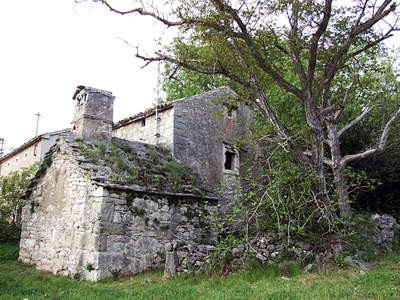

Govor istrorumunja zaštićeno kulturno dobro
 Kršanski načelnik Josip Kontuš upozorio je da je stvaran broj onih koji se služe tim govorom znatno veći od 90-ak ljudi, kako je navelo resorno ministarstvo.
Odluka Ministarstva kulture o proglašenju govora Istrorumunja na području Sušnjevice i okolnih sela zaštićenim nematerijalnim dobrom Hrvatske u Općini Kršan dočekana je kao veliki poticaj očuvanju identiteta te male etničke zajednice u podnožju Učke, doznali smo od kršanskog načelnika Josipa Kontuša.
- Rješenje Ministarstva primili smo ovih dana i sada slijedi sazivanje sjednice Općinskog poglavarstva, a potom i vijeća, ne bismo li donijeli konkretan program i strategiju zaštite naših Istrorumunja, koja se neće odnositi samo na jezik. Mi smo već ranije shvatili bit našeg zadatka u usporavanju procesa nestanka tog govora, ali i cijele njihove zajednice, pa smo tu našu obvezu uključili i u preambulu izmijenjenog općinskog Statuta. Ove smo godine povukli i prvi konkretan porez pa smo za većinu sela u kojima žive Istrorumunji stavili dvojezične putokaze, što je i šira javnost dobro prihvatila. Razmišljamo o nastavku postavljanja dvojezičnih putokaza, a želimo i u Sušnjevici urediti muzej, odnosno etno-kuću te organizirati neke druge aktivnosti, kao što je primjerice izdavanje kalendara na istrorumunjskom. Naša je općina prostorom velika, s mnogo problema i ograničenim sredstvima, pa sve to nećemo moći učiniti proračunskim novcem, ali nam sada rješenje Ministarstva kulture otvara nove mogućnosti financiranja iz županijskih i državnih izvora. Također, morat ćemo se okrenuti i namjenskim fondovima Europske unije, ali i ostvariti bolje kontakte s Rumunjskom, novom članicom EU-a, rekao je Kontuš.
Načelnik nas je upozorio da na području njihove općine od Sušnjevice do Jasenovika i okolnih sela taj jezik ne govori svega 90 ljudi, kako se navodi u obrazloženju Ministarstva kulture, već je pravi broj nekoliko puta veći. Prije rata on je nadilazio brojku od tisuću ljudi, između dva rata Sušnjevica je bila općinsko središte upravo zbog Istrorumunja, no nakon velikog poslijeratnog iseljavanja danas ih je na ovim prostorima znatno manje. Dosta ih je u Italiji i New Yorku, a upravo iz Amerike dolazi snažna podrška afirmaciji te etničke zajednice. Naime, ovog ljeta je u Sušnjevici boravila američka znanstvenica naših korijena Zvjezdana Vrzić, koja je uz pomoć američkih donacija, ali i Istarske županije počela s opsežnim projektom istraživanja posebnosti tog stanovništva. Kapitalni potez u očuvanju govora Istrorumunja, popularno nazvanih Ćiribiri, napravio je hrvatski akademik August Kovačec, koji je svojedobno objavio njihov rječnik, a ogroman u njihovoj zaštiti, afirmaciji i podizanju samosvijesti učinio je pulski profesor dr. Goran Filipi.
S obzirom na poguban utjecaj asimilacije, u zaštiti baštine stanovnika vlaškog podrijetla koji su se u ovaj dio Istre počeli naseljavati u 15. i 16. stoljeću morat će se povući brži i smjeliji potezi nego dosad.
October 12, 2007
© 2007 Glas Istre